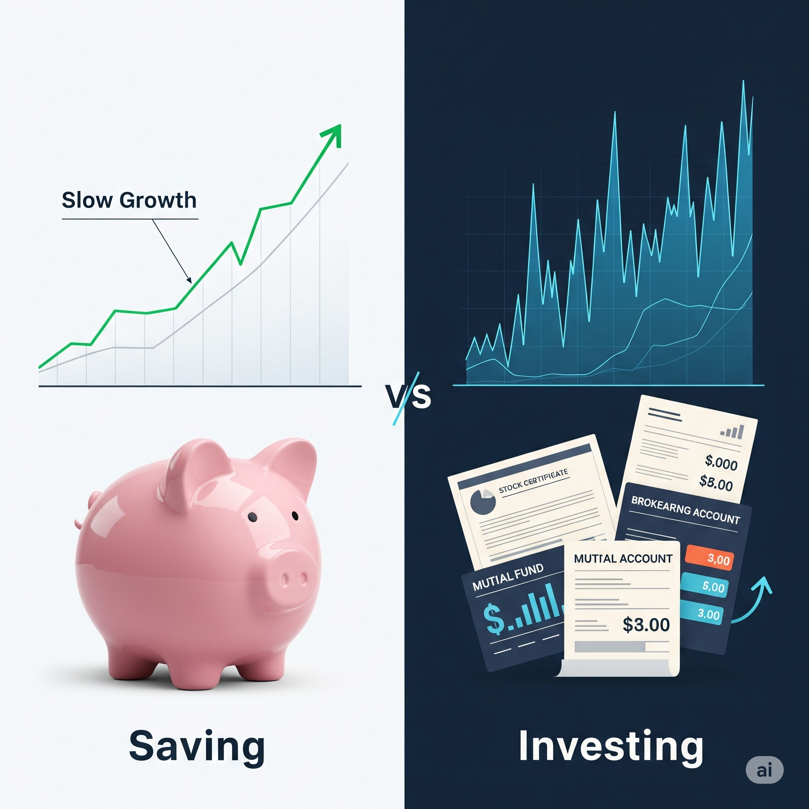
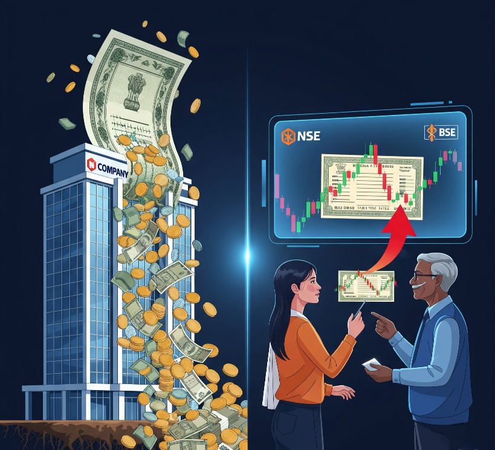
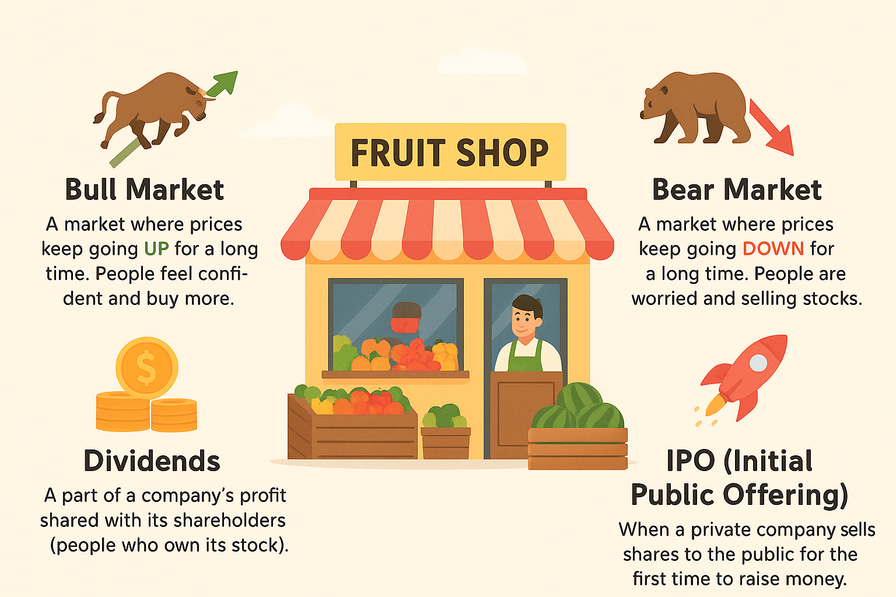
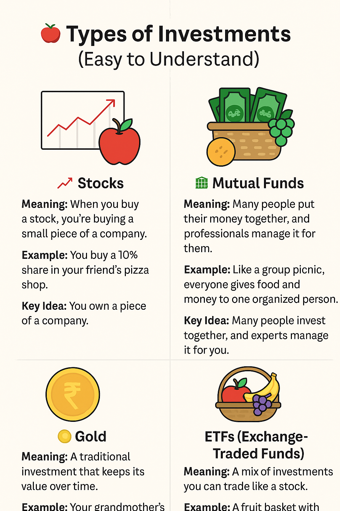
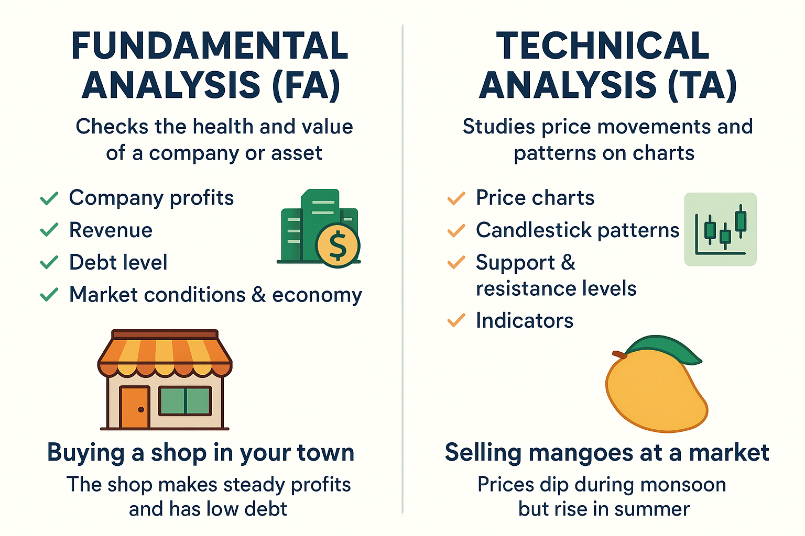
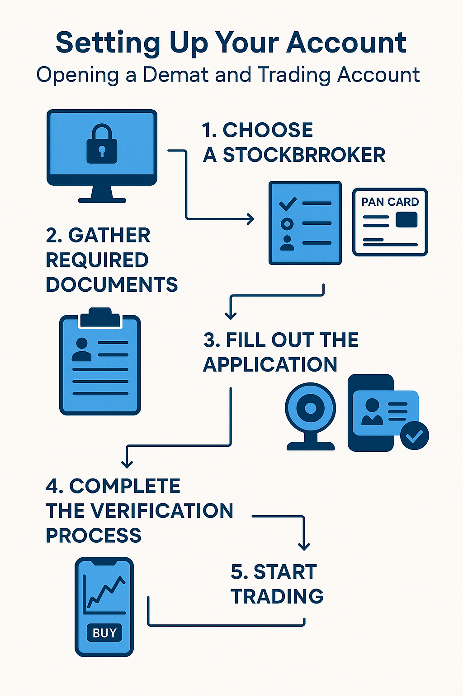

Beginner Stock Market Course
A beginner's course on the stock market is designed to provide you with the fundamental knowledge and skills needed to start investing.
Key Concepts You'll Learn
- Introduction to Investing:
Hey there! 👋 Thinking about your money and how to make it grow is a smart move.
Let's explore the fundamental concepts of **saving versus investing**, and the crucial relationship between **risk and reward**. Understanding these ideas is the first step toward building a solid financial future.
Saving vs. Investing
The main difference between saving and investing is **purpose** and **growth potential**.
-
Saving
This is for **short-term goals** and emergencies. When you save, you're putting money in a place that's safe and easily accessible, like a savings account. The primary goal is to **preserve your principal** (the money you put in). Because it's so safe, the returns are very low. Your money won't grow much, and in some cases, its purchasing power might even decrease over time due to inflation.
-
Investing
This is for **long-term goals**, like retirement or buying a house years down the line. When you invest, you're putting your money into assets like stocks, bonds, or real estate with the goal of **growing your wealth significantly** over time. Investing comes with a greater chance of returns, but also more risk.
The key takeaway is that you should do both. **Save for the short term, and invest for the long term.**
Risk vs. Reward
Risk and reward are two sides of the same coin in the world of investing. They are directly linked: to get a higher potential reward, you usually have to take on more risk.
-
Risk
This is the possibility of losing some or all of your money. Different investments have different levels of risk. For example, a savings account has almost no risk, while investing in a single company's stock is much riskier. The value of the stock could go up, or it could go down significantly.
-
Reward
This is the potential return on your investment, or how much money you could make. The more risk you take, the higher the potential reward. Investments with lower risk, like government bonds, offer lower returns. Investments with higher risk, like growth stocks, offer the potential for much higher returns.
Think of it like this: A savings account is like taking a stroll on a flat, paved path. It's safe, but you won't get anywhere fast. Investing in a volatile stock is like hiking up a steep mountain trail. It's more challenging and there's a chance you could stumble, but the view from the top could be incredible.
The goal is to find a level of risk you're comfortable with that aligns with your financial goals and timeline. It's about finding the right balance for you. ⚖️
-
- Understanding the Stock Market:
NSE, BSE, IPO, primary/secondary market.
The stock market can sound complicated, but let's break it down using some simple, real-life examples.
Imagine a giant online shopping website, but instead of clothes or electronics, people are buying and selling tiny pieces of companies. This is the stock market.
The Marketplaces: NSE and BSE
Think of these as the two biggest online stores in India for trading stocks.
-
NSE (National Stock Exchange)
This is like a modern, high-tech marketplace. The Nifty 50 is its most popular list, showing how the top 50 biggest companies are doing.
Example: If you hear "Nifty 50 is on a high," it means companies like Reliance and TCS are generally doing well.
-
BSE (Bombay Stock Exchange)
This is the oldest marketplace, like a trusted, traditional bazaar. The Sensex is its main list, tracking how 30 very well-known companies are performing.
Example: If the Sensex is "up," it means the total value of these 30 companies—like Infosys and HDFC—has increased.
The "New Product Launch": IPO
An IPO (Initial Public Offering) is when a company sells its shares to the public for the very first time. It's like a brand new product hitting the market.
Example: Before Zomato was a public company, only its founders and a few investors owned it. When they did their IPO, they were essentially saying, "Hey everyone, you can now buy a small part of our company!"
Buying From the Company vs. Buying From Others: Primary and Secondary Markets
There are two ways to buy stocks:
-
Primary Market
This is the first sale. You are buying directly from the company itself during its IPO. The money you pay goes straight to the company.
Example: When you applied to buy Zomato shares during its IPO, you were in the primary market. You bought the shares directly from Zomato.
-
Secondary Market
This is every sale after the first one. You're buying shares from another person who already owns them. The company doesn't get any money from this sale; it just changes hands between two investors. The NSE and BSE are these secondary markets.
Example: A few months after the Zomato IPO, you decide to buy some more shares. You go on a trading platform and buy them from another investor who is selling. This happens in the secondary market. The money goes to the other investor, not to Zomato.
-
- 📚 Key Trading Terminology :
Bull/bear market, dividends, IPOs.
some common terms you'll hear when people talk about the stock market, explained in a way that's easy to remember.
🐂 Bull Market
Meaning: A market where prices keep going UP for a long time. People feel confident and buy more.
Example: Your fruit shop is packed every day, and fruit prices are rising — everyone’s happy to buy more!
💡 Optimism is in the air, prices are rising.
🐻 Bear Market
Meaning: A market where prices keep going DOWN for a long time. People are worried and selling stocks.
Example: Your fruit shop has fewer customers, and fruit prices are falling — people aren’t spending much.
💡 Pessimism takes over, prices are falling.
💰 Dividends
Meaning: A part of a company’s profit shared with its shareholders (people who own its stock).
Example: Your fruit shop earns ₹10,000 profit, and you give ₹1,000 each to your 10 partners — that’s a dividend!
💡 Extra cash reward for being a part-owner.
🚀 IPO (Initial Public Offering)
Meaning: When a private company sells shares to the public for the first time to raise money.
Example: Your fruit shop wants to open 10 more branches, so you let the public buy shares for the first time.
💡 The company’s first big step to go public.
-
Types of Investments:
Stocks, mutual funds, ETFs, Gold.
Different Ways to Grow Your Money 🌱💰
Let's look at some common ways you can invest your money, like planting different kinds of seeds to grow your financial garden! 🪴
1. Stocks 📈
- What it is: Buying a small piece of a company. If the company does well, the value of your piece (your stock) can go up! ⬆️
- Think of it like: Buying a tiny share of a big shop 🏢. If the shop becomes very popular 🎉 and makes more money 💰, your share becomes worth more!
- Real-life Example (India): Imagine you buy shares of Infosys 🇮🇳💻, a big Indian IT company. If Infosys gets a lot of new projects and its profits increase 📊, the price of its shares might go up, and you could make a profit ₹ if you decide to sell.
2. Mutual Funds 🧺
- What it is: Pooling your money 🤝 together with many other people 🧑🤝🧑👩🤝👩, and a professional manager 💼 invests it in different things like stocks and bonds. It's like a basket 🧺 of different investments.
- Think of it like: Instead of buying pieces of many small shops yourself, you give your money to an expert who buys a variety of them for you. This spreads out the risk 🛡️.
- Real-life Example (India): You invest in an SBI Bluechip Fund 🏦🇮🇳. The fund manager will take your money and invest it in the stocks of large, well-known Indian companies 🏢🇮🇳. This way, your money isn't just in one company.
3. Gold ✨
- What it is: Buying physical gold (like jewelry 💍 or coins 🪙) or investing in paper gold (like Gold ETFs 📜 or sovereign gold bonds 🇮🇳). Gold is often seen as a safe investment 🛡️, especially during uncertain times 🤔.
- Think of it like: Keeping a shiny treasure 🌟. Its value might go up over time ⏳, and it can be a good backup 👍.
- Real-life Example (India): Your family might buy gold jewelry for occasions 👰♀️, which can also be considered an investment. Alternatively, you could buy a Sovereign Gold Bond issued by the Reserve Bank of India 🇮🇳🏦, which is like investing in paper gold and also earns you interest 💰.
4. ETFs (Exchange Traded Funds) 🚥
- What it is: ETFs are like mutual funds that trade on the stock exchange 🏛️ like individual stocks 📈. They often track a specific index (like the Nifty 50 🇮🇳) or a sector (like banking 🏦 or IT 💻).
- Think of it like: Buying a ticket 🎟️ that gives you access to the performance of a whole group of shops (like all the big grocery stores 🛒) instead of picking each one individually.
- Real-life Example (India): You buy a Nifty 50 ETF 🇮🇳. This ETF will invest in the same 50 companies that are part of the Nifty 50 index, in the same proportion. So, if the Nifty 50 goes up ⬆️, your ETF investment will likely also go up.
Remember, every investment has its own level of risk ⚠️ and potential for reward 🎉. It's important to understand these before you decide where to put your money! Happy growing! 🌱💰
- Analysis Methods:
Fundamental & technical analysis.
Two Ways to Analyze a Stock: A Detective's Guide 🕵️♂️
When investors try to figure out if a stock is a good buy, they often use two main methods: Fundamental Analysis and Technical Analysis. Think of them as two different types of detectives trying to solve the same mystery.
Fundamental Analysis: Investigating the Company's Health 🩺
This method is about looking at the company's true value. A fundamental analyst is like a doctor checking a patient's health. They look at the company's financial reports, management team, and overall business to see if it's strong and healthy. The goal is to find out if the stock's price is a fair reflection of the company's real worth.
Simple Analogy: Imagine you want to buy a used car. A fundamental analysis would involve checking the car's engine, looking at its service history, seeing how many miles it has, and checking the reputation of the manufacturer. You're focused on the car's actual condition and value.
Real-life Example: Let's say you're considering buying shares of a company like Tata Motors. A fundamental analyst would look at:
- Earnings Reports: Is the company making a profit? 💰
- Balance Sheet: How much debt does it have? Is it financially stable? 🛡️
- News and Management: Is the CEO well-respected? Are there new models of cars being launched that could boost sales? 🚀
- Competition: How is it performing compared to rivals like Mahindra? 🏎️
Based on this deep dive, they might conclude that Tata Motors is a great company and its stock price is currently undervalued, making it a good investment for the long term.
Technical Analysis: Studying the Stock's Behavior 📈
This method ignores the company's fundamentals. A technical analyst is more like a weather forecaster. They study past stock price movements and trading volumes to predict future price changes. They believe that all the information you need is already reflected in the stock's chart. They use patterns and indicators to spot trends and make predictions.
Simple Analogy: To continue the car example, a technical analysis would be like watching the car's sales over the past few years. You'd see that every time the price drops to a certain level, it quickly gets bought up, and every time it rises to a certain point, people start selling. You're not worried about the engine; you're just focused on the buying and selling patterns.
Real-life Example: You're looking at the stock chart for HDFC Bank. A technical analyst would look for:
- Chart Patterns: Is the stock forming a "head and shoulders" pattern, which might indicate a price reversal? 📉
- Moving Averages: Is the stock price crossing above its 50-day moving average, a sign of a new upward trend? ↗️
- Volume: Is there a lot of trading happening on a particular day, which could signal a big change? 📊
Based on these chart patterns, they might decide to buy the stock now because it looks like it's about to go up, or sell it because a downward trend seems to be starting. The focus is on when to buy or sell, not what to buy.
- Setting Up Your Account:
Opening a Demat and trading account.
How to Set Up Your Trading Account: A Simple Guide
To start investing in the stock market, you first need to open two essential accounts: a Demat Account and a Trading Account. Think of it like this: a Demat account is your digital locker for stocks, and a trading account is the platform you use to buy and sell them.
1. What are these accounts?
- Trading Account: This is your "buy and sell" account. It acts as the middleman between your bank account and your Demat account. When you want to buy a stock, money moves from your bank to your trading account, and when you sell, the money comes back.
- Demat Account: This is your "digital safe." It holds all your shares and other investments in an electronic format. In the past, people used to get physical paper certificates for their stocks, but now everything is held in a Demat account, making it secure and easy to manage.
2. The Simple 3-Step Process 🚶♂️
Opening these accounts is straightforward. You will need to choose a broker, which can be a traditional bank or an online discount broker.
-
Step 1: Choose a Broker 🤝
First, you need to find a broker that you want to open your accounts with. This can be a well-known bank like HDFC Bank or ICICI Bank, or a popular online discount broker like Zerodha or Upstox. They all offer different pricing plans and services.
-
Step 2: Fill Out the Application Form ✍️
You will need to fill out an account opening form, which can usually be done online. You'll also need to submit a few documents:
- Proof of Identity (POI): Your PAN Card.
- Proof of Address (POA): Aadhaar Card, Passport, or Voter ID.
- Proof of Income (PoI): For trading in derivatives (futures and options), you may need to provide a salary slip or bank statement.
- A recent photograph.
- A cancelled cheque from your bank account.
-
Step 3: Verification and Activation ✅
Once you submit the form and documents, the broker will verify them. This might involve a quick in-person verification or a video call. After a few days, your Demat and Trading accounts will be activated, and you will receive your account details.
Real-life Example:
Imagine you want to buy shares of Reliance Industries. First, you'll open a trading and Demat account with a broker like Zerodha Upstox, 5paisa and more. You transfer money from your bank account to your Zerodha trading account. You then use the trading platform to buy the shares. The money is debited from your trading account, and the shares are then securely stored in your Demat account. When you want to sell them later, the process is reversed!
Before You Begin
To open a Free demat account with Zerotha and start investing in stocks,gold,etfs and more, Here is the referal link below... CLICK ME https://zerodha.com/open-account?c=JJR916
- Set Clear Goals: Know your why.
- Understand Your Risk Tolerance: Be realistic.
- Practice with a Simulator: Try virtual trading.
- Start Small: Use money you can afford to lose.